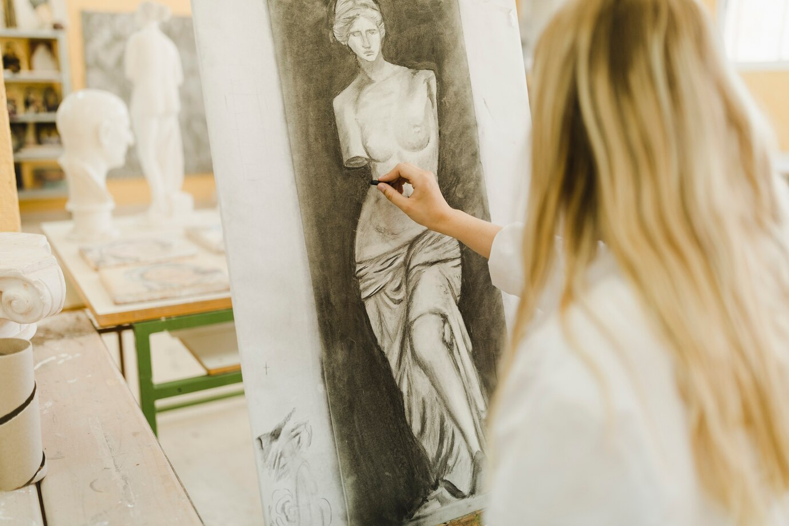
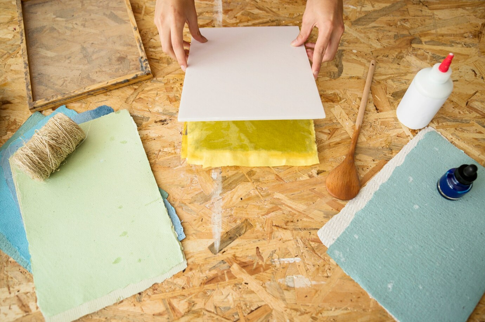
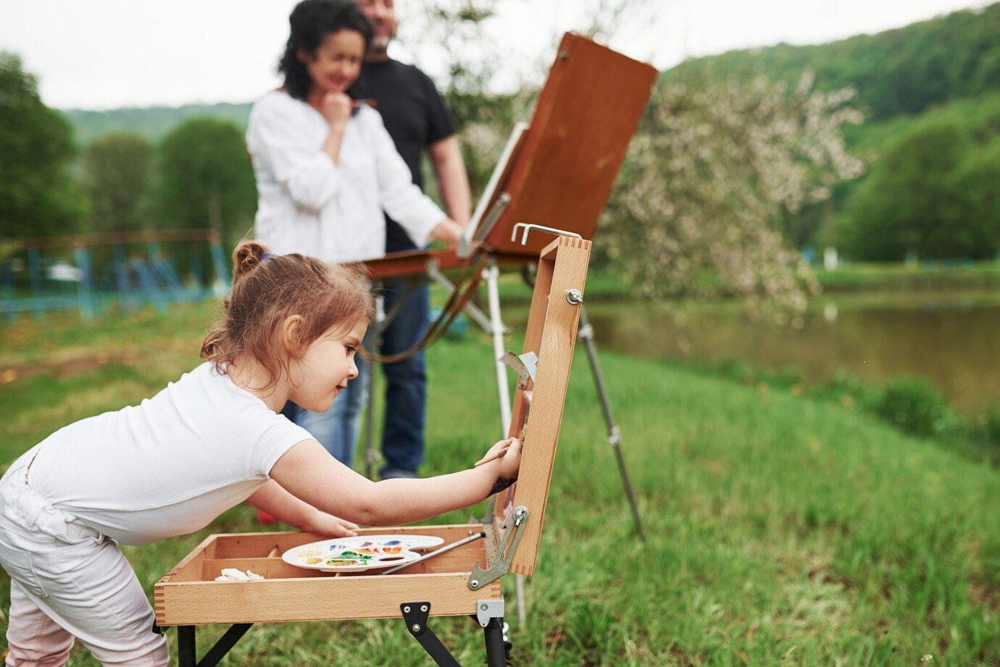

Почему художникам нужны гипсовые фигуры? Гипсовые фигуры — это незаменимый
инструмент для обучения
художников....
Они помогают разобраться в основах формы, объема и света. Благодаря их четкой
геометрии и однотонной поверхности легче понять, как падает свет и образуются тени, что особенно
важно при изучении академического рисунка. Работая с гипсовыми моделями, художник учится
передавать глубину, перспективу и пропорции, развивая глазомер и чувство композиции.
Кроме
того, рисование гипсовых фигур – это отличная тренировка перед работой с живыми моделями. Они
позволяют изучить анатомию, структуру лица и тела без отвлекающих факторов, таких как цвет и
текстура кожи. Именно поэтому многие мастера прошлого начинали с гипсовых слепков перед
созданием великих произведений искусства. Если вы хотите прокачать свое мастерство, гипсовые
фигуры – ваш лучший союзник в этом пути!
Показать больше

С чего начать художнику-моделисту?
Если вы только погружаетесь в мир моделизма, важно выбрать правильную отправную точку....
Начните с простых моделей, чтобы освоить основные техники – сборку, шлифовку,
склеивание и покраску. Оптимальный вариант – пластиковые наборы начального уровня или бумажные
модели, где можно изучить принципы работы с формой и деталями. Также важно подобрать
качественные инструменты: нож для резки, клей, кисти и краски – базовый минимум, который
пригодится на первых этапах.
Не стоит сразу стремиться к сложным проектам – моделизм требует
терпения и внимания к деталям. Пробуйте, экспериментируйте и не бойтесь ошибок. Со временем вы
научитесь видеть мелкие нюансы, улучшите свою технику и сможете создавать действительно сложные
и реалистичные модели. Главное – получать удовольствие от процесса и развивать свои навыки шаг
за шагом!
Показать больше

Искусство на природе

Пленэр, который запомнится надолго
Наш последний пленэр прошел в невероятно живописном месте – среди залитых солнцем лугов и тихой
речной глади. ...
Утренний свет создавал мягкие оттенки, а дневное небо постоянно менялось, заставляя
нас ловить каждый момент. Художники работали в разных техниках: кто-то писал маслом, кто-то
акварелью, а кто-то делал быстрые зарисовки в скетчбуке. Общение, свежий воздух и полное
погружение в природу сделали этот день по-настоящему вдохновляющим!
После пленэра мы устроили
небольшой просмотр работ, делились впечатлениями и обсуждали удачные решения. Каждый увидел
пейзаж по-своему – кто-то сосредоточился на цвете, кто-то на композиции, а кто-то уловил
атмосферу момента. Такие встречи не только помогают совершенствовать мастерство, но и наполняют
энергией для новых творческих поисков. Ждем всех на следующем пленэре – присоединяйтесь!
Показать больше
Оставить комментарий